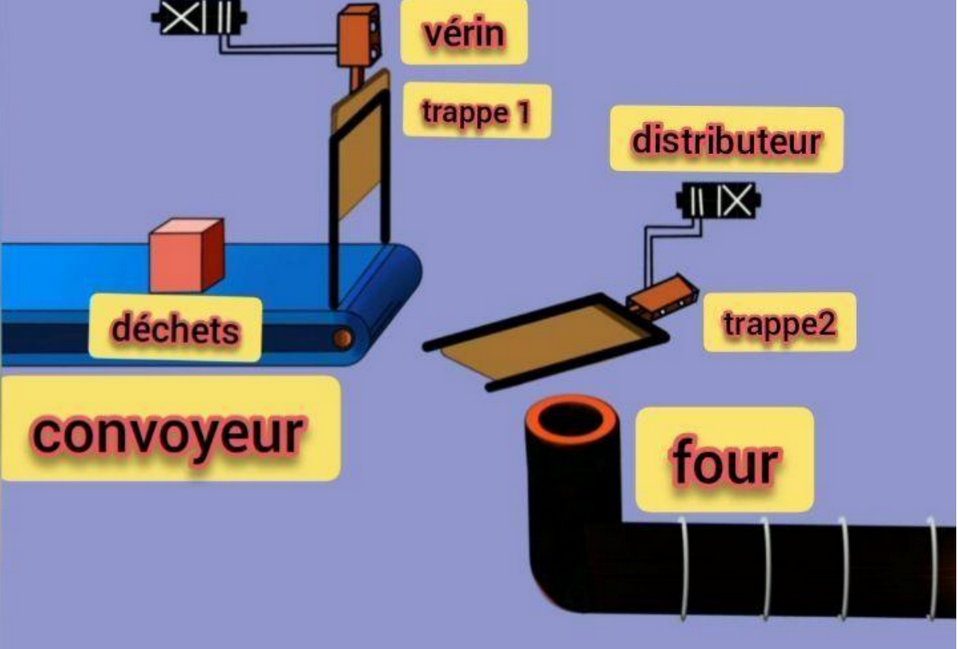

1).Analyse de la couverture fonctionnelle et structurelle
2).Débogage et analyse des défauts
3).Analyse statique et dynamique du code
 ➡️Le rapport PFE chez FACOMAC
➡️Le rapport PFE chez FACOMAC
Le groupe Holcim, d’origine suisse, est un acteur majeur au niveau mondial dans la production du ciment. Le Groupe est aujourd’hui présent sur les 5 continents dans près de 70 pays et emploie près de 80.000 personnes. En outre « Lafarge » est un groupe français de matériaux de construction Fondé en France en 1833, qui produit et vend dans le monde entier principalement du ciment, des granulats et du béton prêt à l'emploi, sous le nom commercial “Lafarge”. Ses produits et solutions de construction sont utilisés pour construire ou rénover des logements, bâtiments et infrastructures.
Les déchets peuvent causer des problèmes dans n’importe quelle usine dans le Monde, l’évacuation des déchets d’une manière manuelle vers un four peut causer des brulures et même la mort au pire des cas. Pour cela nous avons proposé d’automatiser le processus d’évacuation des déchets minimisant les risques et optimisant l’efficacité.Voici la figure représentatif du système automatique:
Le système d’automatisation d’un circuit de déchets vers un four sera conçu pour transporter les déchets depuis le point d’origine jusqu’au four en utilisant un convoyeur automatisé. Le convoyeur sera équipé d’un système de détection qui arrêtera automatiquement le convoyeur si des obstacles ou des problèmes surviennent pendant le transport. Le système automatisé vers un four se compose du départ cycle ,arrêt d’urgence, Déport bande 1, Déport bande 2, photocellule, des interrupteurs de position,2 temporisateurs : T1(30 secondes) et T2 (20 secondes),Moteur, Vérin 1 et 2 et 2 pré-actionneurs :Distributeurs 1 et 2.
1).Réalisation du grafcet et du LADDER
2).Réalisation du schéma de puissance et de commande
3).Simulation sous le logiciel STEP7
➡️Le rapport PFE chez LAFARGEHOLCIM
Contactez moi en clickant sur le bouton suivant
CONTACTER MOI
© BARRAD Marouane.